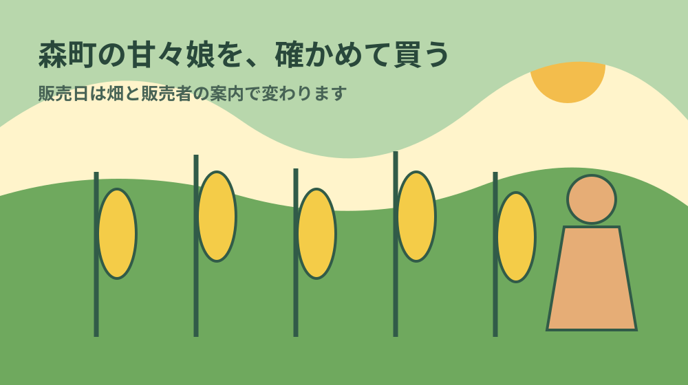
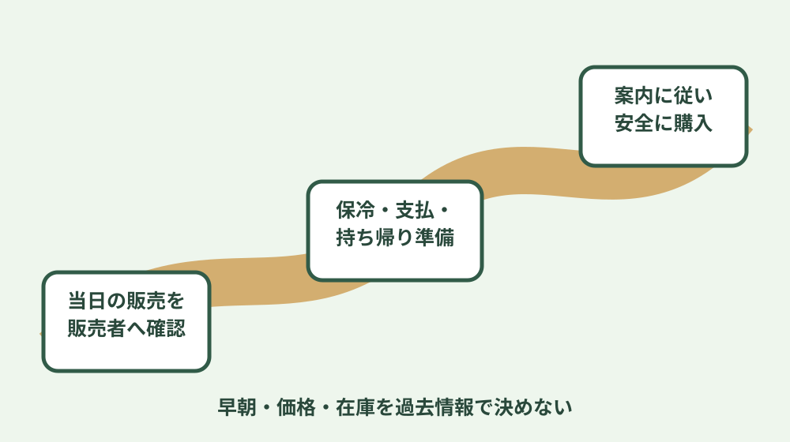
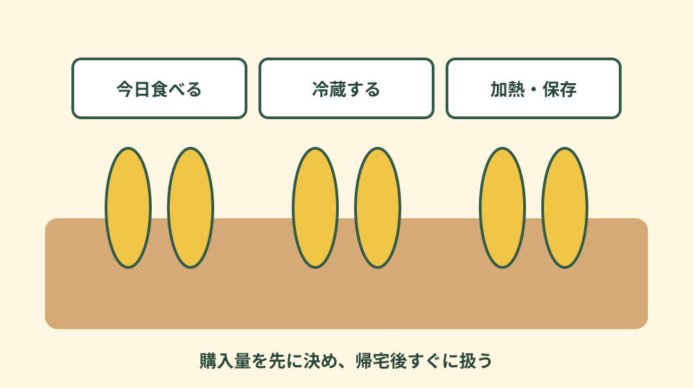

森町の甘々娘完全ガイド｜特徴・旬・買い方
森町で甘々娘を買いたいときは、古い口コミの「何時に並べば買える」「この値段だった」をそのまま使わず、販売者の最新案内を確認します。とうもろこしは天候と生育で収穫量が変わり、直売所ごとに販売日、開始方法、予約、発送、支払、駐車が異なります。このページは、販売者を探し、当日の案内に従い、安全に持ち帰って味わうまでの順序をまとめます。

1. 甘々娘を「森町の直売体験」として理解する
森町公式の移住情報は、町の農産物としてお茶、とうもろこし、柿、レタス、米、しいたけなどを挙げています。甘々娘を探すことは、商品名だけでなく、農産物を生産者や販売者から受け取る体験でもあります。畑の生育と販売が近いため、工業製品の店舗在庫のように毎日同じ量・時間・価格を期待しないことが出発点です。
甘々娘という名前から、甘さだけを絶対的な数値で比較したくなります。しかし、食味は収穫、保管、調理、個人の感じ方にも左右されます。「必ず生で食べられる」「どこで買っても同じ」「何日置いても同じ」と決めず、販売者が示す食べ方と保存方法を優先します。初めてなら、まず家庭で食べ切れる本数から試すと扱いやすくなります。
森町観光協会の個別店舗ページには、森町で最初に甘々娘を栽培したと案内する農園が掲載されています。同ページには販売時期、営業時間、料金等の情報がありますが、それは掲載された販売者の案内であり、森町全体の統一条件ではありません。また、今年の当日状況を永久に保証するものでもありません。最新の更新や販売者への確認を重ねます。
検索結果やSNSには、以前に訪れた人の購入時刻、待ち時間、価格、売切れ時刻が残ります。これらは混雑を想像する参考にはなっても、当日の確定情報ではありません。投稿年、販売者、曜日、天候が違えば条件も変わります。販売者自身、森町観光協会、当日の掲示という順に情報の新しさを確かめます。
このガイドは特定の農園を順位付けするものではありません。おすすめを決めるより、自分がいつ訪れられるか、何本必要か、予約・発送を使いたいか、車をどこへ置くかを整理し、その条件に合う販売者を探します。生産者の畑、作業、近隣の暮らしを尊重することが、地域の農産物を楽しむ前提です。
「旬」という言葉も、一日だけの境界を示すものではありません。生育が進む畑、収穫する区画、販売できる量は日ごとに変わります。同じ町内でも販売者ごとに畑と販売計画が違うため、町全体の開始日や終了日を一つに決められません。旅行日を先に固定する場合は、甘々娘を買うことだけを旅の成立条件にせず、販売があれば立ち寄る計画にします。
品種名と産地名も分けます。甘々娘という品種を扱う販売者が森町にいることと、店頭のとうもろこしがすべて甘々娘であることは同じではありません。袋、箱、値札、販売者の説明で品種を確認します。ほかの品種が並んでいる場合は、優劣ではなく収穫時期や食べ方の違いを聞き、家庭の好みに合わせます。
2. 販売者は公式・運営者情報から探す
最初の入口は、森町観光協会の買い物・特産品情報と、町公式の地域・農産物情報です。観光協会の個別ページで販売者名、住所、連絡先、駐車、販売案内を確認し、リンク先や電話で当年の情報を確かめます。地図サイトだけに載る名称は、営業継続や当日の販売を保証しません。
候補を紙やメモへ三つまで書きます。販売者名、確認したURL、更新・確認日、販売方法、問い合わせ方法、駐車、支払、予約・発送の有無を並べます。「甘々娘を扱うか」だけでなく、自分が訪れる日に販売予定があるかを聞きます。電話をする場合は農作業中を想定し、短い質問にまとめます。
質問は「8月9日に買えますか」だけではなく、「訪問予定日の販売有無はどこで確認できますか」「予約や整理方法はありますか」「売切れ時は案内がありますか」「駐車場所はどこですか」「支払方法は何ですか」のように分けます。発送を希望するなら、受付、箱、本数、送料、到着日の指定可否を販売者へ確認します。
複数販売者を一日で回る計画は、移動と駐車を増やします。売切れを恐れて無理な運転をしたり、農道や住宅前で待ったりしないよう、第一候補と代替を決めます。買えなかった場合は、その日の森町でお茶や町歩きを楽しむなど、とうもろこしだけに予定を詰めすぎない方が落ち着いて行動できます。
時期を知りたい場合は、過去の「例年」より当年の販売開始・終了案内を優先します。天候や畑で開始が前後し、収穫がない日もあります。日付を断言するまとめサイトではなく、販売者が今季の案内をどこで出すかを確認します。翌年に同じ時期で買えるとは限らないため、確認日をメモします。
情報を比べるときは、発信者、対象年、更新日、対象店舗を見ます。販売者の当日投稿、販売者ページの今季案内、観光協会の個別ページ、過去の訪問記というように、当日性と公式性を分けます。検索結果の説明文だけが新しく見えても、リンク先本文の更新が古い場合があります。ページを開き、連絡先が現在も同じかまで確認します。
電話がつながらないから営業していない、SNS更新がないから販売していない、とも断定できません。農作業中は応答できない場合があります。販売者が指定する連絡方法と時間帯に従い、何度も連続して電話をかけないようにします。確定情報が得られない場合は訪問を見送ることも選択肢です。

3. 出発前に販売・交通・持ち帰りを準備する
購入量は「何人が、いつ、どう食べるか」から決めます。家族用、贈答用、翌日以降の保存用を分け、冷蔵庫や冷凍庫の空きを確認します。たくさん買えたこと自体を目的にせず、帰宅後に扱える本数へ抑えます。贈る場合は、相手が受け取れる日と保存方法を先に伝えます。
持ち物は、保冷バッグ、必要に応じた保冷材、商品を倒さない箱、飲み物、販売者が案内する支払手段です。保冷材を直接商品へ強く当てることが適切かは販売者へ聞きます。暑い時期の車内へ長時間置かず、購入後に観光するなら保管できる方法を考えます。
交通は、直売所の住所だけでなく指定駐車場と進入方向を確認します。農道や生活道路は幅が狭いことがあり、路上駐車、転回、アイドリングが農作業や近隣へ影響します。販売者の誘導、看板、係員がある場合は従い、場所が分からなければ安全な場所へ停車して確認します。
開店前に並ぶ方式か、予約か、整理券かは販売者ごとに違います。列があるように見えても、どこへ並ぶかを周囲の推測で決めません。家族だけを先に降ろす、敷地入口をふさぐ、他の畑へ入る行動は避けます。小さな子どもを連れる場合は、農機具や車の動線から離れ、保護者が見守ります。
朝早い販売情報が過去にあっても、現在の開始時刻や受付方法を断定しません。農産物は当日の収穫が前提です。遠方から出発する場合は、直前情報の確認方法と、販売中止・売切れ時の代替予定を決めます。買えない可能性を含めて計画することが、安全な訪問につながります。
贈答を考える場合は、相手の在宅、受取可能な時間、とうもろこしを保存・調理できる量を確認します。見栄えのよい箱でも、受取りが遅れれば扱いが難しくなります。発送元が案内する梱包と配送を使い、自分で再発送するときは温度帯、配送日数、送り先の同意を配送事業者へ相談します。
子どもや高齢者と訪れるなら、列に並ぶ時間、日陰、飲み物、トイレ、車の出入りを事前に考えます。暑さや体調を優先し、購入のために無理をしません。一人が買い物をし、もう一人が安全な場所で待つなど役割を決めます。ペット同伴の可否も販売者の案内に従います。
4. 直売所では表示と販売者の説明を確認する
現地では、販売品種、入り数、価格、等級、支払、持ち帰り、保存の表示を見ます。「甘々娘」と別品種が同じ時期に並ぶ可能性もあるため、商品名を確認します。家庭用と贈答用など区分があれば、外観や本数の違いを聞き、自分の用途に合うものを選びます。
一本ずつ自由に触ったり皮をむいたりできるとは限りません。選別済みの袋や箱は販売者の案内に従います。外観だけで味を保証できず、小さな傷や形が食用上どのように扱われているかは販売者へ聞きます。質問する際は販売を止めないよう簡潔にします。
価格は、本数、重さ、等級、販売方法、時期で変わり得ます。森町全体の統一価格はこのページでは示しません。観光協会の個別販売者ページに金額が掲載されていても、現地の当日表示を確認します。発送は商品代と送料、箱、支払、到着条件を分けて聞きます。
領収書が必要なら会計前に尋ねます。現金のみ、キャッシュレス対応なども販売者によって違います。通信状況や機器の都合もあるため、過去に使えた支払方法を当日も使えると決めません。必要な金額の準備は、最新の価格案内を確認して行います。
畑や選別作業は見学施設とは限りません。撮影、動画、SNS投稿は許可を取り、他の客、車の番号、生産者の作業情報が写らないようにします。写真を撮るために商品を長時間占有したり、畑へ入ったりしません。「地域の名物を紹介したい」という気持ちがあっても、販売者の案内が優先です。
5. 購入後は車内放置を避け、家庭ですぐ分ける
購入後は、直射日光が当たる場所や高温の車内へ長時間置かず、販売者が案内する方法で持ち帰ります。遠回りの観光や食事をする場合、保冷だけで十分かを考えます。帰宅時間が長いことを会計時に伝え、適切な扱いを聞くのも有効です。
帰宅したら、当日食べる分、翌日以降の分、贈る分を分けます。すぐに全部の皮をむくのがよいとは限らないため、販売者の説明を優先します。冷蔵庫の詰め込みすぎは冷えにくくなることがあるので、購入前に空きを作ります。食べ切れない分は早めの加熱・冷凍を検討します。
加熱方法は、ゆでる、蒸す、電子レンジなど家庭で選べますが、本数、機器、好みにより時間が変わります。このページで万能な分数を断定しません。販売者のレシピがあれば従い、中心まで適切に加熱します。加熱後も室温へ長く置かず、食べる時刻に合わせます。
生で食べられるという紹介を見た場合も、全ての商品、全ての人に適するとは考えません。販売者の案内、衛生状態、体調を確認し、不安がある人、乳幼児、高齢者などが食べる場合は加熱を選ぶなど慎重に扱います。洗浄や包丁・まな板の衛生も守ります。
味の感想は、購入日、販売者、調理方法と一緒に記録すると次回の参考になります。「甘かった」だけで順位付けせず、粒の食感、香り、家族が好んだ加熱、食べ切れた本数を残します。農産物には個体差があるため、一度の購入を地域全体の評価に広げません。

6. 生産地の暮らしと農作業を尊重する
直売所は観光の目的地であると同時に、生産者の仕事場や生活の近くにあります。早朝の来訪、車列、話し声、ごみ、無断撮影は周囲へ負担をかける可能性があります。販売者が示す時間より前に集まらず、指定外へ駐車せず、ごみは持ち帰ります。
畑の作物は販売前の商品であり、私有財産です。畝へ入る、葉や実に触れる、落ちているものを拾う、ドローンを飛ばすことは、許可なしに行いません。子どもにも、見る場所と触れてよい商品を説明します。農薬や農機具について、根拠のない情報をSNSへ書かないことも大切です。
売切れや収穫なしは、接客の不足ではなく農産物の条件です。遠くから来たことを理由に在庫を求めたり、予約外の取り置きを迫ったりしません。次の販売予定を聞く場合も、天候で変わることを理解します。購入できた時だけでなく、買えなかった時の対応にも地域への敬意が表れます。
農産物の背景を知りたい場合は、販売の忙しい時間に長い取材を始めず、見学や質問を受け付けているか事前に尋ねます。栽培方法、収穫量、苦労を聞いたとしても、話した人の許可なく氏名や内容を公開しません。聞けなかった部分を想像で補って「生産者の声」として書かないことも大切です。
道路に土が付く、農機がゆっくり走る、早朝に作業があることは、生産地の日常と関わります。来訪者側は急かさず、安全な間隔を取ります。地域の人も使う道路であることを忘れず、直売所への列を作る場合も交差点、住宅出入口、田畑への進入口を空けます。
森町でほかの農産物やお茶、和菓子を楽しむなら、森町の買い物と生活動線、森の茶の歴史、森町総合ガイドへ進めます。甘々娘だけを買って急いで帰る以外にも、営業時間を確認して地域を知る方法があります。
7. 森町の甘々娘でよくある質問
森町の甘々娘はいつ買えますか
収穫と販売は天候、生育、販売者によって変わります。過去の時期を当年へ当てはめず、森町観光協会の店舗情報や販売者の当日案内へ確認してください。販売終了も予定より変わる場合があります。
朝早く行けば必ず買えますか
必ず買えるとは限りません。販売日、開始時刻、整理方法、売切れ、予約可否は販売者ごとに異なります。開店前の待機を認めていない場合もあるため、出発前に最新案内を確認します。
甘々娘の価格はいくらですか
本数、等級、販売方法、時期で変わります。過去の掲載価格を現在の統一価格とせず、各直売所の表示や販売者へ確認してください。発送では送料や箱も分けて確認します。
たくさん買ったらどう保存しますか
購入後は高温の車内へ置かず、当日食べる分と保存する分を分けます。販売者の案内に従い、家庭では早めに加熱・冷蔵・冷凍を検討します。冷蔵庫の空きを購入前に作ります。
直売所の畑へ入って写真を撮ってよいですか
畑や作業場は私有地です。立入・駐車・撮影は販売者の案内に従い、農作業や近隣交通を妨げないようにします。人や車の番号が写る投稿にも配慮します。
8. 出発前チェックと公式・運営者情報
出発前に、販売者名、当日の販売有無、開始方法、予約、価格、本数、支払、駐車、持ち帰り、売切れ時の代替を確認します。情報の確認日を付け、家族で共有します。販売者へ連絡できない場合は、過去情報だけで早朝に訪れず、公開された最新案内を待つ判断も必要です。
購入後は、販売者名、購入日、品種、入り数、支払額、持ち帰り時間、保存、調理を短く記録します。翌年は前年メモを予約表として使わず、確認すべき項目の一覧として使います。販売者の連絡先や駐車案内が変わっていないかを改めて調べ、当年の農作業を優先します。
最終確認日：2026-08-09 ／ 販売時期、価格、開始時刻、在庫、予約、発送は販売者ごとに変わります。必ず最新案内へ確認してください。